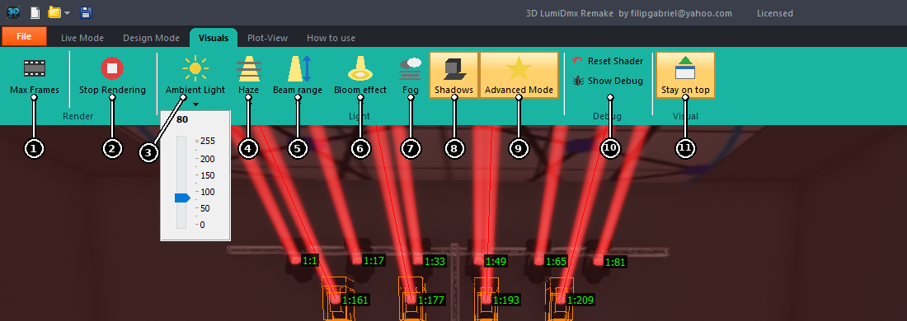
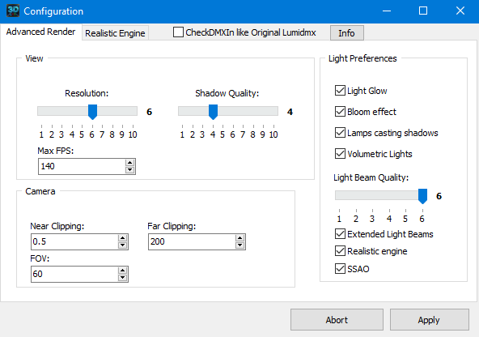
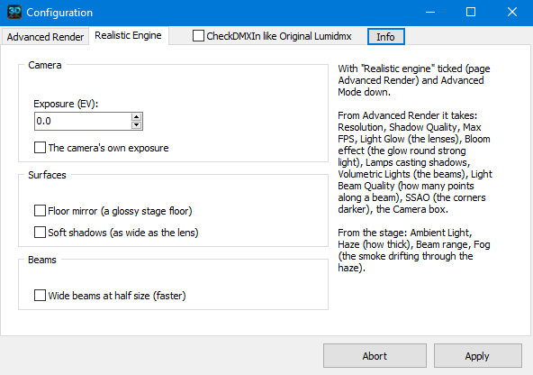

For: FullPlayer
The Visuals tab sets how the light looks in the room. The Configuration window (File > Configuration) sets the quality of the picture.

| 1 | Max Frames - draws as fast as the computer can, to test its speed; the fps in the status bar shows the best. The processor goes up to 100%. |
| 2 | Stop Rendering - stops drawing (to free the computer for something else). |
| 3 | Ambient Light - the light of the room, 0 to 255 (80 at the start). The little arrow opens the slider. |
| 4 | Haze - how thick the haze is, so how strong the beams are seen: 0 to 50. |
| 5 | Beam range - how far the beams are seen: 0 to 500. |
| 6 | Bloom effect - the glow round very strong light (a lens seen from the front, the spot on the floor): 0 to 50. 3 looks realistic. It needs the realistic engine with Bloom effect ticked in Configuration. |
| 7 | Fog - shows only the middle line of each beam (lighter for the computer). |
| 8 | Shadows - the lamps cast shadows. Pressed at the start. |
| 9 | Advanced Mode - the better looking beams. Pressed at the start; release it if the computer is too slow. |
| 10 | Reset Shader / Show Debug - for problems with the graphics card. |
| 11 | Stay on top - the 3D window stays over the other windows (useful on one screen with LumiDMX Remake). |
A pressed button has an orange background - and its name tells what it does, so the state is also clear without the colour.

| Setting | What it does |
|---|---|
| Resolution (1-10) | The detail of the picture. Higher = finer, but slower. |
| Shadow Quality (1-10) | How sharp the shadows are. |
| Max FPS | The most pictures a second (140 here). |
| Near / Far Clipping, FOV | What the camera sees: the nearest and furthest distance, and the angle of view (60). |
| Light Glow | The glow of the lenses. |
| Bloom effect | The glow round strong light (its strength: the Bloom effect slider on the Visuals tab). |
| Lamps casting shadows, Volumetric Lights | Shadows of the lamps; the beams seen in the haze. |
| Light Beam Quality (1-6) | How many points along a beam: smoother beams, more work. |
| Extended Light Beams | Longer, finer beams. |
| Realistic engine | The realistic picture - see the next tab. |
| SSAO | Darker corners and edges, as in a real room. |
Apply uses the settings at once; Abort leaves them as they were.

| Setting | What it does |
|---|---|
| Exposure (EV) | Brighter or darker picture, as on a camera (0.0 = normal). |
| The camera's own exposure | The picture adjusts its brightness by itself, as a camera does. |
| Floor mirror | A glossy stage floor that mirrors the light. |
| Soft shadows | Shadows with soft edges, as wide as the lens. |
| Wide beams at half size (faster) | Lighter for the computer, with wide beams. |
The text on the right of the tab tells what the realistic engine also takes from Advanced Render (resolution, shadows, bloom, the beams) and from the stage (ambient light, haze, beam range).
Not ticked (the default): the light of LumiDMX on this computer is read in one piece, all 16 universes at once, at every picture - the efficient way. Ticked: it is read channel by channel every 20 ms, the way the original LumiDMX 3D reads it. It costs more processor time; use it only when you need it. Info next to it explains the same.